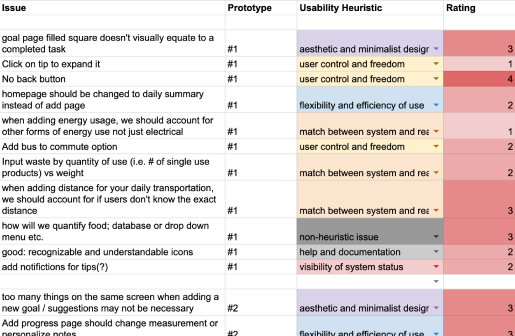

Eco-tracker
Start your journey towards a smaller carbon footprint.
Team: Megan Dinh, Brendan Jew, Tatum Maston
Project Tag: UX/UI, Front-end, Web design
Duration: 8 weeks
Overview

Eco-Tracker allows you to record your most wasteful daily habits so that over time, you can see your progress towards becoming more eco-friendly.
By quantifying habits into tangible amounts of trees, coal, etc., Eco-tracker allows you to see how your actions are saving our planet, motivating to continue forward!
This app was created for the COGS120 course where my team and I developed a web-based application over the period of 8 weeks.
Overview
Maintaining motivation while seeing no tangible results is difficult for any goal, but even more so when trying to save our earth while so many people are destroying it.
Eco-tracker aims to alleviate this problem by visualizing the data logged by users, motivating them to continue by quantifying their positive impact on the environment.
Needfinding
Through interviews with students and user-testing sessions, our group identified that the majority of young adults want to be more environmentally conscious, but have three recurring issues:
1. They don’t know if their efforts are even making a difference.
2. It’s a lot of extra research on their part to understand how impactful say biking is over driving to school.
3. Many asked what should they do to be more environmentally conscious.
This presented our team the opportunity to design Eco-tracker to teach and reassure those eco-conscious folks that they can make a difference!
Storyboards
To get a better understanding of how Eco-tracker could solve the problems we found from our needfinding, our team created storyboards of scenarios of how our app could be utilized. (mine pictured below)

For our storyboard scenarios, our group imagined regular individuals who
felt they weren’t making a difference. Eco-tracker addresses this by quantifying their impact.
Prototypes + Wireframes

Our group began iterating with a paper prototype that best represented our visions. A wireframe was then constructed on Figma for additional testing.
Both the paper prototype and wireframes were evaluated by peers according to Nielsen’s Usability Heuristics.
Paper Prototype
Expanding upon our paper prototype, the wireframe maps out the main functionality of Eco-tracker: logging data and checking your total emissions.
User Testing
Over the next few weeks, as we continually kept iterating, there were further testing with users as more of the application was coded.

Four users close to our main demographic (young, eco-conscious adults) were chosen for extensive testing. They were given a specific list of tasks to accomplish to test for potential painpoints in our app.
The tests were conducted via mobile browsers accessing our application that was hosted on Heroku.
Results from the testing were far from perfect. There were three main issues that our testers all experienced:
1. The user could not identify the markers and identifiers used in our app, specifically the “L” on the summary page and the “Add” on the navbar.
2. The user did not feel extremely motivated by the ambiguous figures on the summary page.
3. The user was confused whenever they were confronted with errors due to buggy interactions and could not recover from them.
Overall, we found that our app did not create the clearest mental model and had many interactions that needed to be fixed.
After revisiting and editing the application, we conducted A/B testing with a large sample of 152 users to determine the effectiveness of our revisions, further confirmed with in-person user-testing interviews.
You can read more and see the data in depth here.
Final Prototype
And here’s the finished + coded Eco-tracker! From Figma screens to a Heroku prototype, this project has been through multiple iterations and improved thanks to feedback from fellow peers and testers.

You can click through it here!
Reflection
I couldn’t have asked for better teammates and TA’s for my first project in web development. It was a difficult and fulfilling challenge to not only design an application, but also to bring it to life with code.
There are many things I would have wanted to improve on this project, given more time and resources, such as enhancing features such as Tips and Goal or more focused testing. However, moving forward, I have learned much from this experience––especially how difficult it is to actually code a design.